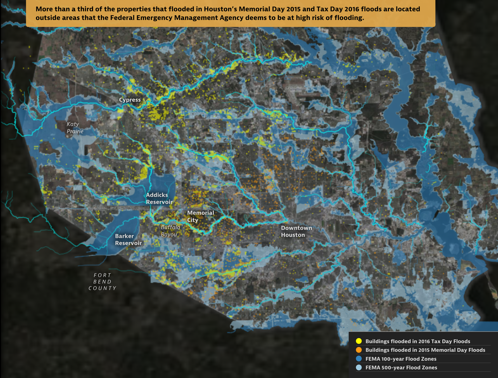
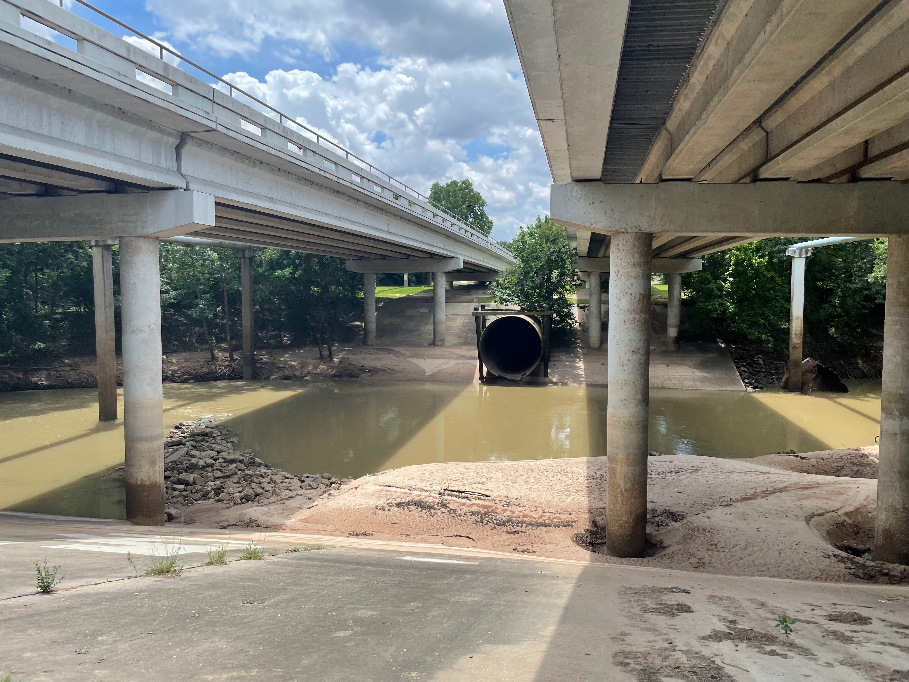
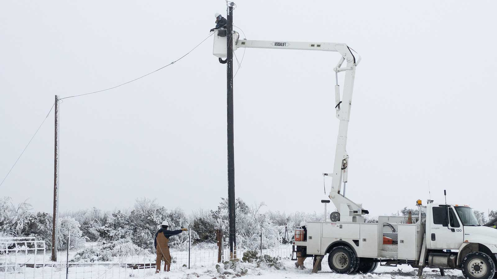
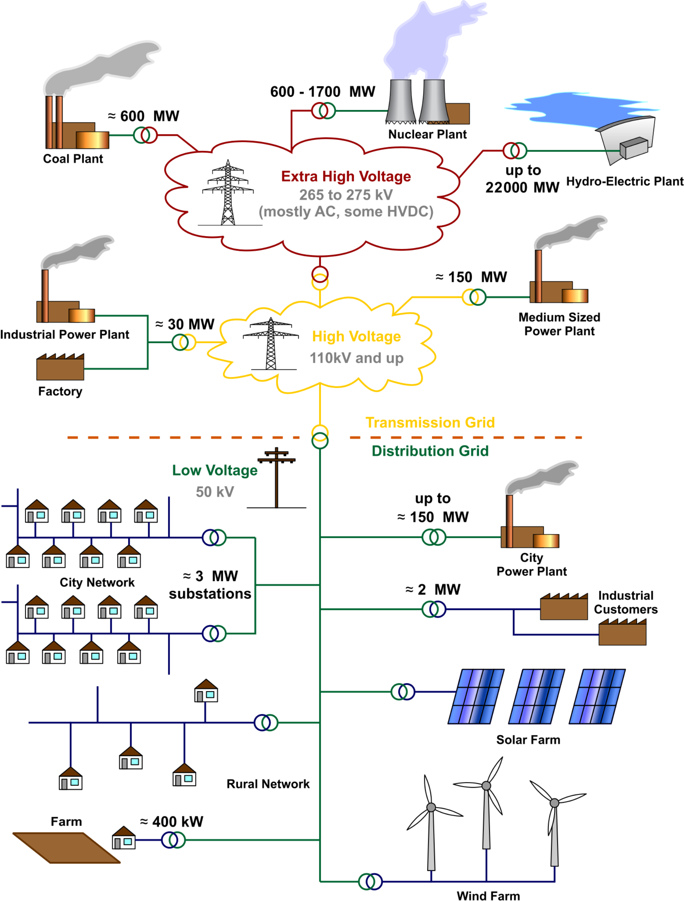
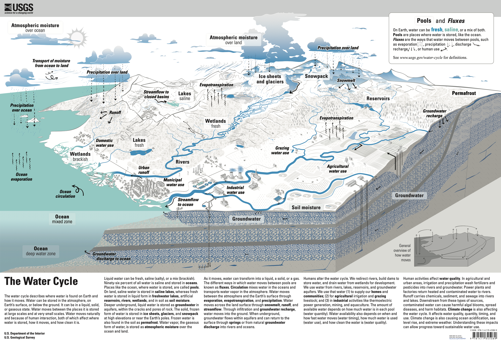
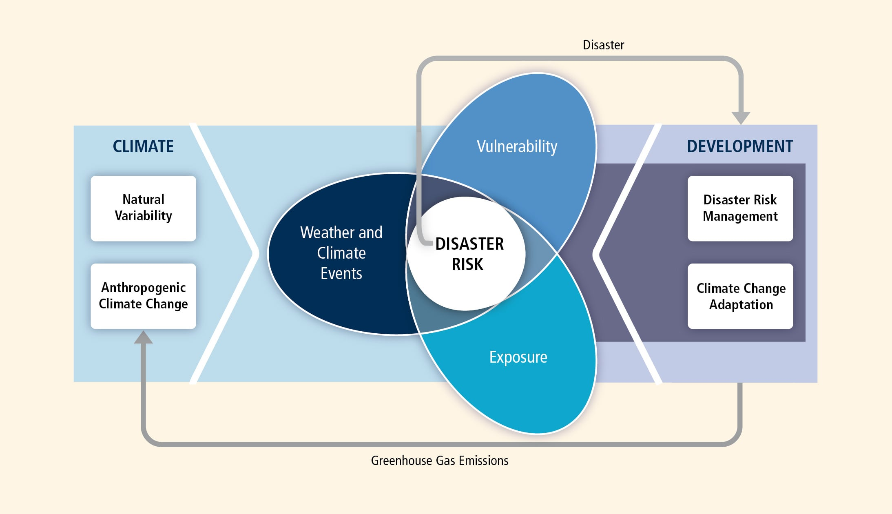

Intro to Climate Risk Management
Monday, January 12, 2026
Decisions We Face
Today
Decisions We Face
Frameworks and Concepts
About Us
About the Course
Logistics
Example Decisions
Update land use / zoning regulations?
: Satija et al. (2016)

Example Decisions
How to size stormwater infrastructure?
: Doss-Gollin

Example Decisions
How high to elevate a house for proactive flood protection?
: Allison Lee / Houston Public Media

Example Decisions
Require weatherization of privately owned electricity infrastructure?
: Jonathan Cutrer / Flickr.

Example Decisions
How to prioritize grid hardening for a growing, electrifying city?
: Wikimedia Commons / CC-BY-3.0
{kind=link}

Frameworks and Concepts
Today
Decisions We Face
Frameworks and Concepts
About Us
About the Course
Logistics
Your Turn
Tip
How would you help a decision-maker choose the “best” option? What tools or frameworks would you reach for?
Foundations We’ll Draw On
- Economic theory: utility, welfare, cost-benefit analysis
- Stochastic optimization: optimal decisions under uncertainty
- Uncertainty quantification: characterizing what we don’t know
- Robust decision making: strategies that work across scenarios
- Engineering systems analysis: modeling complex systems
Climate
The slowly varying aspects of the atmosphere–hydrosphere–land surface system.

Risk Framework

Climate Risks
Your turn!
What climate risks have you heard of?
Climate Risk Management
Your turn!
What climate risk management strategies have you heard of?
- Financial instruments (e.g., insurance)
- Floodproof buildings
- Zoning codes
- Major infrastructure
- Improve emergency planning
XLRM Framework
We’ll use XLRM to structure our thinking about decisions:
- X = eXogenous uncertainties (what we can’t control)
- L = Levers (decisions we can make)
- R = Relationships (how the system works)
- M = Metrics (what we care about)
About Us
Today
Decisions We Face
Frameworks and Concepts
About Us
About the Course
Logistics
About Me

- Assistant Professor of Civil and Environmental Engineering
- dossgollin-lab.github.io
- jdossgollin@rice.edu
- Office hours Wednesday 12-1 (before class) or by appointment
Your turn
Let’s go around quickly:
- Name / what you prefer to be called
- Year and major / research area
About the Course
Today
Decisions We Face
Frameworks and Concepts
About Us
About the Course
Logistics
Course goals
Climate risk management is a very broad field. We will:
- Survey how it is implemented in different fields
- Develop a deep understanding of how to assess proposed climate risk strategies
- Apply these methods to a real-world problem
Final Project
In small teams, you’ll act as expert consultants auditing a real-world climate plan.
- Three Audit Memos: Analyze the plan’s framework, evidence, and robustness
- Executive Briefing: Present your findings in Week 14
- Written Report: Due during finals week
Three modules
- Risk Analysis (Weeks 1-5): Characterize hazards and quantify uncertainty
- Decision Analysis (Weeks 6-9): Evaluate options under uncertainty
- Optimization Under Uncertainty (Weeks 10-13): Find robust strategies
Week 14: Final Project Presentations
Class structure: Weekly rhythm
| Day | Activity | Laptops? |
|---|---|---|
| Monday | Lecture | No |
| Wednesday | Quiz + Paper Discussion | No |
| Friday | Lab Studio | Yes |
No laptops Mon/Wed helps us focus on discussion. Exceptions: tablet note-taking or documented accommodations.
The syllabus is online!
- Course website: https://ceve-421-521.github.io/
- Syllabus: https://ceve-421-521.github.io/syllabus/
- Read it by Wednesday!
- Questions? Ask now or later!
Grading
CEVE 421 (Undergrad)
| Category | Weight |
|---|---|
| Quizzes | 20% |
| Exams (3 × 20%) | 60% |
| Final Project | 20% |
CEVE 521 (Graduate)
| Category | Weight |
|---|---|
| Quizzes | 15% |
| Exams (3 × 15%) | 45% |
| Final Project | 20% |
| Seminar Leadership | 20% |
Graduate students: Discussion leadership
CEVE 521 Requirement
You will lead one Wednesday discussion session.
- Design an active learning experience—not just a presentation
- Contact me to schedule your session
- This signals to everyone: Wednesdays are active, not passive
About those exams
No cumulative final!
- Exam 1 (Week 6): Covers Module 1 (Risk Analysis)
- Exam 2 (Week 9): Covers Module 2 (Decision Analysis)
- Exam 3 (Finals Week): Covers Module 3 only
Finals week = Exam 3 + Written Report
About the labs
Labs are ungraded but essential:
- Solutions posted immediately for self-correction
- Wednesday quizzes may include lab content
- Exams will test your ability to apply these methods
You may attend labs in-person or on Zoom.
A community of learning
- We all benefit from a diverse, safe, welcoming, and inclusive environment
- Analysis is not value neutral
- Assume good faith and engage in good faith yourself
AI and LLMs
- LLMs are useful for some tasks, notably coding, if you really know what you’re doing. You should learn to use them appropriately.
- Your use should be guided by purpose (here: learning!)
- I want us to discuss how we use these tools rather than to police your use.
Full policy: ceve-421-521.github.io/ai.html
Accommodations
If you have a documented disability, scheduling conflicts, or otherwise need accommodations, please let me know as soon as possible.
Viruses are circulating and everyone’s immune system is different. If you need others to wear a mask to protect you, please let me know – no health disclosures needed.
Logistics
Today
Decisions We Face
Frameworks and Concepts
About Us
About the Course
Logistics
Reading for Wednesday
Two articles on flood risk management in New Jersey:
Readings and guiding questions are on the class website
- Come prepared for discussion
- Quiz should be easy if you do the reading!
- PDFs also available on Canvas
Lab 1: Friday
- Julia setup and “Hello World”
- Start early! Installation can be tricky.
- Friday lab session is for troubleshooting and Q&A
This Week’s To-Dos
Before Wednesday
Before Friday
- Start Lab 1 — complete the “Before Lab” setup steps
References
James Doss-Gollin